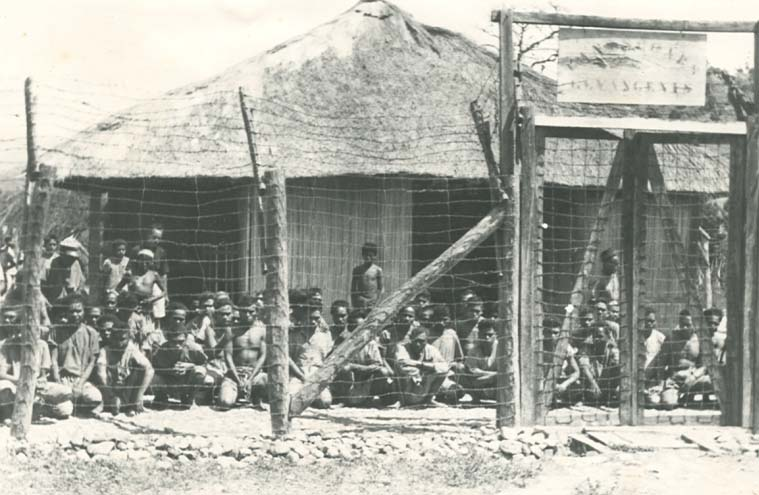

Apa itu Kemenkumham?

Kementerian Hukum dan Hak Asasi Manusia Republik Indonesia adalah kementerian dalam Pemerintah Indonesia yang membidangi urusan hukum dan hak asasi manusia. Kementerian Hukum dan Hak Asasi Manusia berada di bawah dan bertanggung jawab kepada Presiden.Kementerian Hukum dan Hak Asasi Manusia dipimpin oleh seorang Menteri yang sejak 27 Oktober 2014 dijabat oleh Yasonna Laoly. Kemenkumham beberapa kali mengalami pergantian nama yakni: "Departemen Kehakiman" (1945–1999), "Departemen Hukum dan Perundang-undangan" (1999–2001), "Departemen Kehakiman dan Hak Asasi Manusia" (2001-2004), "Departemen Hukum dan Hak Asasi Manusia" (2004–2009), dan "Kementerian Hukum dan Hak Asasi Manusia" (2009–sekarang).
Sejarah Kemenkumham

Kementerian Hukum dan Hak Asasi Manusia pertama kali dibentuk pada tanggal 19 Agustus 1945 dengan nama Departemen Kehakiman. Menteri Kehakiman yang pertama menjabat adalah Soepomo. Kementerian Hukum dan Hak Asasi Manusia pada zaman pemerintahan Belanda disebut Departemen Van Justitie yaitu berdasarkan peraturan Herdeland Yudie Staatblad No. 576.
Tugas dan fungsi
Berdasarkan Peraturan Presiden Nomor 44 Tahun 2015, Kementerian Hukum dan Hak Asasi Manusia mempunyai tugas menyelenggarakan urusan pemerintahan di bidang hukum dan hak asasi manusia untuk membantu Presiden dalam menyelenggarakan pemerintahan negara. Dalam melaksanakan tugas tersebut Kementerian Hukum dan Hak Asasi Manusia menyelenggarakan fungsi:
- perumusan, penetapan dan pelaksanaan kebijakan di bidang peraturan perundang-undangan, administrasi hukum umum, pemasyarakatan, keimigrasian, kekayaan intelektual, dan hak asasi manusia;
- koordinasi pelaksanaan tugas, pembinaan, dan pemberian dukungan administrasi kepada seluruh unsur organisasi di lingkungan Kementerian Hukum dan Hak Asasi Manusia;
- pengelolaan barang milik/kekayaan negara yang menjadi tanggung jawab Kementerian Hukum dan Hak Asasi Manusia;
-
pengawasan atas pelaksanaan tugas di lingkungan Kementerian Hukum dan Hak Asasi Manusia;
- pelaksanaan bimbingan teknis dan supervisi atas pelaksanaan urusan Kementerian Hukum dan Hak Asasi Manusia di daerah;
Selengkapnya di wikipedia